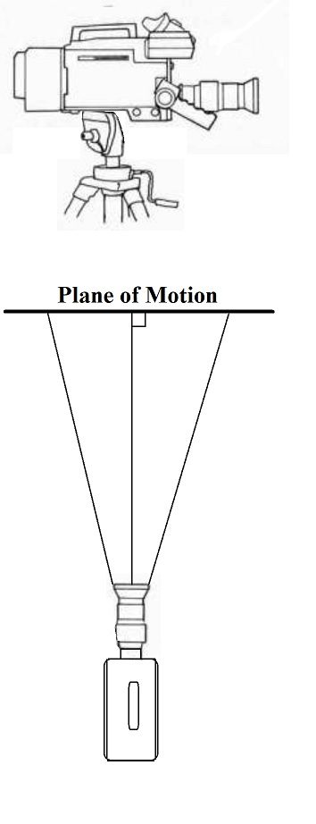
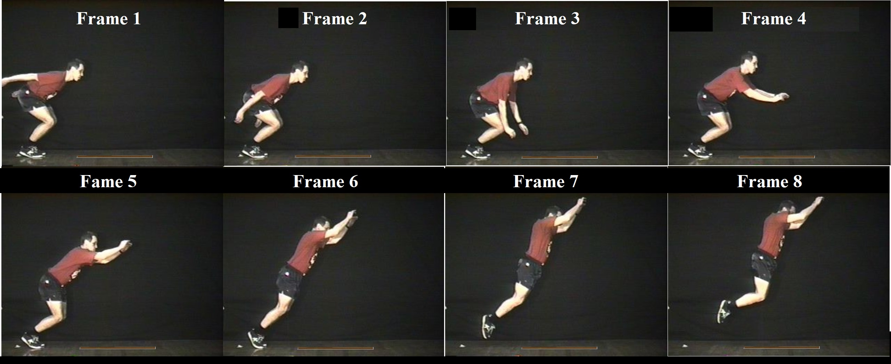
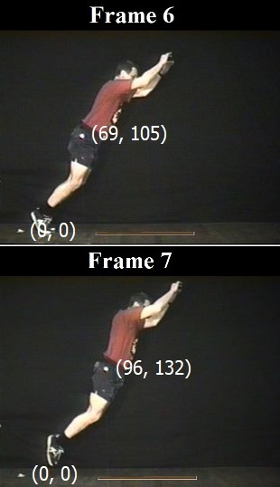
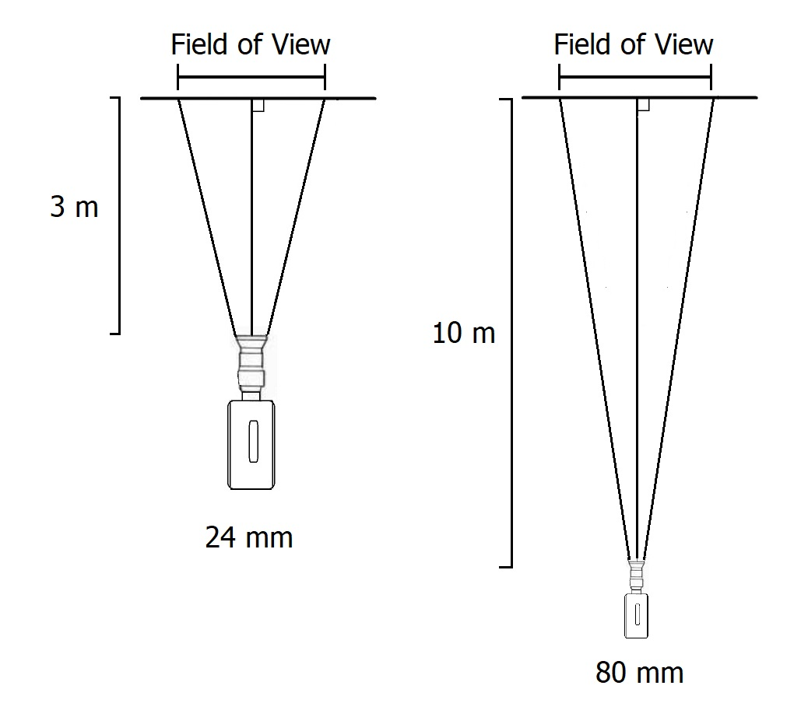
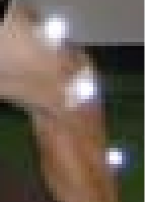
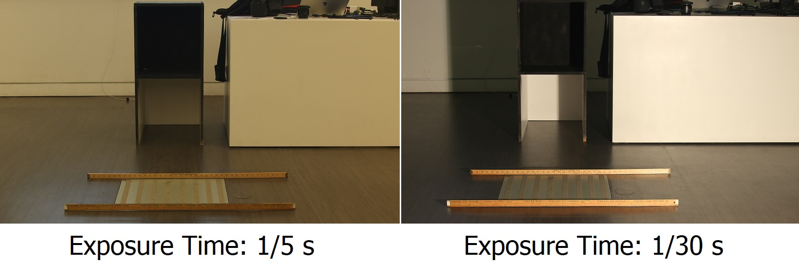
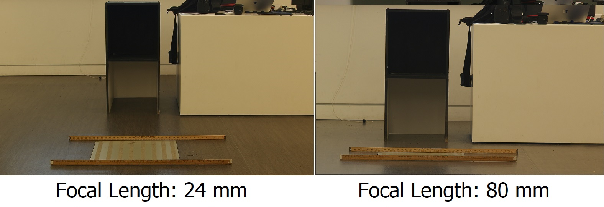
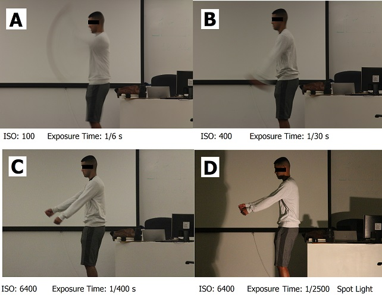

Quantitative Analysis of Human Movement
In order to analyze human movement quantitatively, we must measure human movement. There are many different methods used in biomechanics to perform motion capture. For a closer examination of these methods see the "Motion Capture" lecture. The most common method of measuring human movement is to use film or video recordings with a method called "motion capture". This lab presents the steps required to produce a video tape or film that can be quantified and the typical method of making the measurements.

The Biomechanical Film or Video:
There are only two variables that can be measured by a video or film analysis. These two variables are position and time. However, if we are careful about how we produce the video, we can derive many other variables such as joint angles, velocities, accelerations, centers of mass, etc. The following is a list of requirements:
1) Camera Placement:
A single camera
limits the biomechanist to a planar analysis. So the camera
must
be placed perpendicular to the plane of motion.
The camera should be stationary so that any motion from one frame to
the next would be due to the movement of the subject.
Quite
often, the camera is placed on a tripod and leveled so that the
vertical axis will be in line with gravity and the height of the camera
is at the middle of the frame. Since the camera cannot zoom
in or
out during filming, it must be paced far enough away so as to "see" the
required frame in its entirety. There are methods of using a
panning or moving camera but they require a calibrated background such
that the position and orientation of the camera can be calculated for
each frame.

2) Body segment landmarks are normally placed on the subject in a biomechanical analysis so that joint centers can be digitized more easily. Often, the markers are reflective tape so when a spotlight is shined on the subject, the video shows bright lights at each marker that is really the reflected light from the spotlight.
3) The image needs to be scaled to life size using an object of known size in the plane of motion. Often, a meter stick or calibrated object of known size is placed in the field of view and in the plane of motion.
4) Exact timing information of frame rate is needed to establish velocity and acceleration. A falling object in the background was used in the old days but this was replaced by light emitting diodes within the cameras and the quartz technology used in modern watches ensures exact precise frame rate in today's video cameras.
Digitization Example:
In the example below, a camera was set to record the sagittal plane view of a person performing a standing long jump. A meter stick has been placed as a scale and eight frames are shown that were recorded at 1/15 second intervals. The actual recording had many more frames but we will only look at these few for simplicity. The digital images can be analyzed using a computer screen and a mouse.

If we look at frame 6, we can see that the person is at the point of take-off. We wish to calculate the linear take-off velocity. We need to find the coordinates of the marker in frame 6 and in frame 7, scale the coordinates to life size and then find the rate of change.

We can take the white marker on the floor to be the (0,0) coordinate. The marker on the subject has the coordinates of (69, 105) units in Frame 6 and (96, 132) in Frame 7. These coordinates must be converted to life size units in meters. To do this, we use the meter stick which is 110 units long in the images. Since 110 units is equal to one meter in life size, we divide the coordinates by 110 to get (0.627, 0.955) m in Frame 6 and (0.823, 1.200)m in Frame 7.
We can see that the marker on the subject has moved upward and to the right from Frame 6 to Frame 7 and we can use the coordinates to calculate the displacement. In the horizontal direction, the displacement is 0.823 - 0.627 = 0.196 m. The displacement in the vertical direction is 1.200 - 0.955 = 0.245 m. We would then use Pythagoras to find the resultant displacement. In this case it would be the square root of (0.1962 + 0.2452) = 0.314 m.
In order to find the velocity, we would divide the displacement by the time between frames. Since the time between frames was given as 1/15 seconds, We would divide 0.314 by 1/15 which is equal to 0.314(15) = 4.71 m/s.
Basic Photography for Biomechanists
Whether the image to be analyzed is from a still or video camera, there are some basic rules and techniques that every biomechanist should know in order to obtain a clear, high quality image.

Aperture and Exposure Time:
Aperture refers to the size of opening that the lens uses to allow light expose film or reach the CCD of a digital camera. It is measured in f-stops with the larger numbers (settings) being used when a lot of light is present and lower numbers are used in low light situations. For example f/8 is often used outdoors in sunlight while f/2.8 or lower is often used indoors with room lighting. Another factor that affects the amount of light that hits the film or CCD is the exposure time which is regulated by the shutter speed. The shutter opens to the set aperture for a period of time and then closes. In biomechanics, this exposure time is measured in a fraction of a second. The scientist must choose a time that is sufficiently short to prevent motion blur yet sufficiently long to get a proper exposure. If the time is too short, the image will be under exposed and be too dark. Therefore, it is important to choose the best aperture and exposure time to yield an image that is sufficiently bright without motion blur. Still photography often uses a flash to increase the amount of light such that a short exposure time can be used and in video, extra lights such as flood lights or TV lights are used. A shutter speed of 1/100th of a second is often sufficient for walking and slower movements while 1/500th or higher is often used for more dynamic movements. The biomechanist first considers the motion to be captured and selects the shutter speed required. Then using a light meter, selects an aperture that will allow a proper exposure. If there is not enough light, extra light must be used or the ISO can be altered.
Depth of Field (DOF):

The depth of field refers to the range of distances from the camera that will be in focus. Objects that are closer or further away from this range will not be in focus. Notice in the figure to the left that the white chess pieces are in focus. However, if light was low and the photographer needed to open the aperture to f/2, the depth of field is small and the black chess pieces are not in focus. The depth of field is quite small at f/2 which means that only a narrow range of objects will be in focus. If more light is available, and an aperture of f/16 can be used, both the white and black pieces are in focus because the depth of field is larger. The biomechanist must be careful to ensure that all objects that need to be digitized are in focus. It is possible for the right arm to be in focus but the left arm is not in focus of a sagittal plane image like the baseball player above.
ISO:

The ISO is another way to alter the exposure. It increases the sensitivity of the CCD to light. A typical value of 100 is used but if the biomechanist finds that the movement requires a shutter speed of 1/500 and the largest aperture of the lens is f/4.0 which does not allow enough light, the ISO can be increased to 400 which allows the available light to make a brighter image. Modern cameras allow ISO settings of 6400 or even higher which enables fast shutter settings in low light but the image quality becomes noisy or grainy so care should be taken when using ISO as a means to deal with low light. The added benefit of using a supplementary light source like a spot light near the camera is that it tends to fill in shadows that might obscure a joint marker even if the overall image is properly exposed.

Auto Focus:
The other crucial aspect to image quality is the sharpness of the image. Since biomechanical filming is concerned with the plane of motion, the subject is always the same distance from the camera and focus does not need to change. Therefore, the auto focus function should be turned off so the camera does not get confused by anything moving in the background or foreground.

Focal Length (Zoom):
The focal length is also an important consideration. Most people are familiar with a zoom lens that allows a closer view of the subject but this also has complications. The focal length is measured in millimeters with a focal length of 80mm being approximately equal to the view from a human eye. A wide angle lens (<50 mm) increases distortion called the "barrel effect" which can be quite extreme (think of a "fish-eye" lens or the security peep hole in a door). A longer lens (> 200mm) has less distortion but is harder to hold steady and requires a high shutter speed to prevent motion blur from an unsteady hand. Modern lens technology uses "image stabilization" to reduce this problem but biomechanics places the camera on a fixed tripod and does not suffer from hand motion or require image stabilization. Often, a longer lens cannot handle apertures larger than f/4.0 which also means more light or a higher ISO is required. However, since perspective distortion is less, the flatter image (long focal length) is preferred in biomechanics. Cameras that provide optical zoom without actually changing the focal length achieve the "zoom in" effect by reducing the resolution of the image. As the resolution of digital cameras increases, this becomes less of a concern.

Resolution:
A typical HD video camera has a resolution of 1080 x 1920 picture elements (called pixels). If the image is displayed on a computer monitor or tablet with equal or greater resolution, no resolution is lost If the monitor has a lower resolution, then the resolution of the digitization will be that of the monitor. If the digitization is made by a human positioning a cursor over the marker on the human subject, The resolution can be further limited by the visual acuity of the person digitizing. Typically, the human eye has a visual resolution of about 170 pixels per inch when viewing the monitor from a distance of 20 inches. Therefore, if the digital display is smaller than 6.5 x 11.3 inches, the resolution of the digitization would also be reduced. Most computer displays are larger than this so the resolution of the digitization is that of the raw image.
If the camera was positioned so that the field of view was 2 m tall, then the resolution would be 1 pixel equals 2000/1080 = 1.85 mm of life size. This means that our digitized coordinates are ±2 mm. The actual marker is considerably larger than this and so we estimate the center of the marker.
The image to the right is a portion of the left leg of the baseball player shown at the top of this page. The original resolution was about 6mm of life size per pixel and when we magnify to the point where we can easily see the pixels, we can see that each marker has several pixels even at this rather low resolution. A human digitization would be able to select the pixel closest to the center of the marker even if the marker was slightly out of focus or under exposed or if there was digital noise from a high ISO. Motion blur would be a problem but perfect lighting, depth of field or sharp focusing is of less concern.
Bottom Line:
The more light you have, the greater freedom you have to choose aperture, exposure time, ISO, depth of field and focal length. The laboratory setting usually allows extra light from spot lights to be used but many field settings do not and the biomechanist must be prepared to manipulate all of these factors to get the best image possible. Motion blur is worse than out-of-focus blur, perfect exposure, or image noise. Therefore it is most important to have an exposure time short enough to prevent motion blur and then adjust light, aperture and ISO to get a proper exposure.
Results of Experiment 1:
A camera was placed 3.2 meters from the plane of motion. Two meter sticks were placed on the floor 0.5 m apart. An aperture of f/4.0 was selected and the exposure time was adjusted to get a proper exposure using the room light. A spot light of 1000 W was then projected and a new exposure time was found.

The images above show that the additional light allowed the exposure time to be reduced from 1/5 to 1/30 of a second. The addition of the spot light allowed a shutter speed that was 6 times faster and would result in a sixth of the motion blur.
Results of Experiment 2:
While the camera was at the 3.2 m placing, a focal length of 24 mm was used. The camera was then re-positioned to a distance of 10 m and a new focal length of 80 mm was found to have the same field of view.

The images above show that the perspective error is considerable less when the camera was placed at 10 m. The two meter sticks appear to be at different lengths and the Y coordinate of the meter stick farthest from the camera would be greater even though both sticks are on the floor.
Results of Experiment 3:
A subject stood in the plane of motion and performed several arm swings. The camera was set an ISO of 100 and an exposure time 1/15 second. With each subsequent arm swing, the ISO was increased to 200, 400, 800, 1600 and 3200. Each time the ISO was doubled a new exposure time of 1/2 the previous time was used.

The images on the right show that each time the ISO was increased, the exposure time could be decreased and the motion blur was reduced. Image A had an ISO setting of 100 which required an exposure time of 1/6 s. The exposure is not too dark but the motion blur is extreme. Image B had an ISO setting of 400 which makes the CCD 4 times more sensitive to light than ISO 100. An exposure time of 1/30 s reduced the motion blur by 5 times but it is still not acceptable for accurate digitizing of the subject's hands. Image C increased the ISO to 6400 which is 16 times more sensitive than Image B. An exposure time of 1/400 s reduced the motion blur to a more acceptable amount. Image D has the same ISO as Image C but the addition of the spot light allowed an exposure time of 1/2500 s and an almost total elimination of motion blur. If you look closely at images C and D you can see an increase in noise when compared to Image A but this would not impair a digitization of a marker on the hands.
.